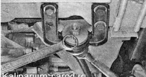
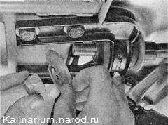
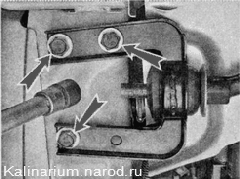
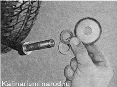
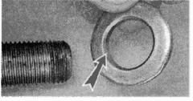

Кронштейн крепления растяжки снятие и установкаДля выполнения работы потребуется смотровая канава или эстакада. Последовательность выполнения 1. Подготавливаем автомобиль к выполнению работы. 2. Удерживая растяжку ключом на 24 мм от проворачивания, вторым ключом того же размера отворачиваем гайку крепления растяжки.- 3. Снимаем упорную шайбу. 4. Торцовым ключом на 17 мм выворачиваем три болта крепления кронштейна к кузову автомобиля. 5. Снимаем кронштейн с растяжки. 6. При необходимости снимаем вторую упорную шайбу и регулировочные шайбы, запомнив или записав их количество и расположение, чтобы не нарушить регулировку угла продольного наклона оси поворота. Установка После замены кронштейна растяжки необходимо в сервисном центре проверить углы установки передних колес. Установка всех снятых при разборке деталей производится в обратной последовательности. Предупреждение! При установке регулировочной шайбы необходимо, чтобы фаска на ее внутренней кромке была обращена к растяжке. 
|